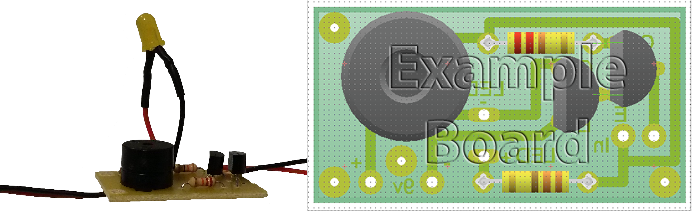

You have been asked to design a device that could be hung on a bedroom door, and act as a buzzer for people to request entry to the room. It should be battery powered.
Download the portfolio template below. This will allow you to begin to collect research and plan your project.
Markdown version MS Word versionYou should begin by researching the products are already on the market.
Click the link below for some ideas of how to research door buzzers.
ResearchUse the information you find to complete the research section of your portfolio.
Engineers need to manage their projects effectively to ensure they produce a finished product on time and on budget.
Ask your project manager (teacher) when the deadline is for the project and use the list of tasks below to create a Gantt chart to help guide you throughout.
What follows is a series of videos, detailing how the idea for the circuit was formulated.
As you watch the videos, make a few notes so you can add these details to your portfolio.
What follows is a series of videos, detailing how transistors can help in our circuit design.
As you watch the videos, make a few notes so you can add these details to your portfolio.
The following slides detail how you should design your Door Buzzer Circuit.
The first slide will provide a description, the second and third an image and the last slide will show a video tutorial.
You should try and design your circuit first from just the description, and then scroll down to the lower slides if you get stuck.

Below are a pair of diagrams showing the completed PCB. You can use these to aid you in your design of the PCB in Circuit Wizard, or skip straight to the tutorial video on the third slide.
Once you have designed the PCB, you'll need to make a few refinements. Watch the tutorial on the fourth slide to assist you in this.
Watch the videos in the next slides.
The first will explain how to test if your PCB works or not. Follow the tutorial and take screen shots for your portfolio.
The second video will show you how to label your PCB to make the soldering easier.
This is a 3D render of the finished case design. It should give you some idea of what you are aiming for.

The following tutorials use Adobe Illustrator to design the case. You can use an alternative program if you like, but the'll be no tutorial.
To help you use illustrator, you might find this shortcut sheet helpful.

Below is an image of the soldered PCB. Use this and the videos linked on the next slide to solder the components to the board.
{kind=link}